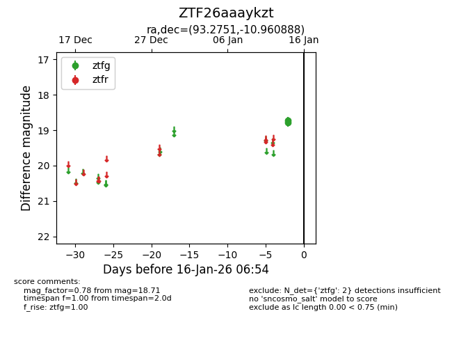
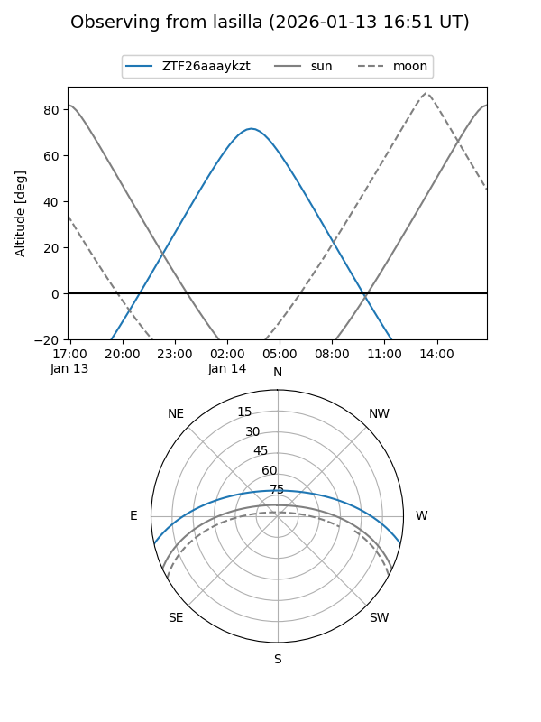
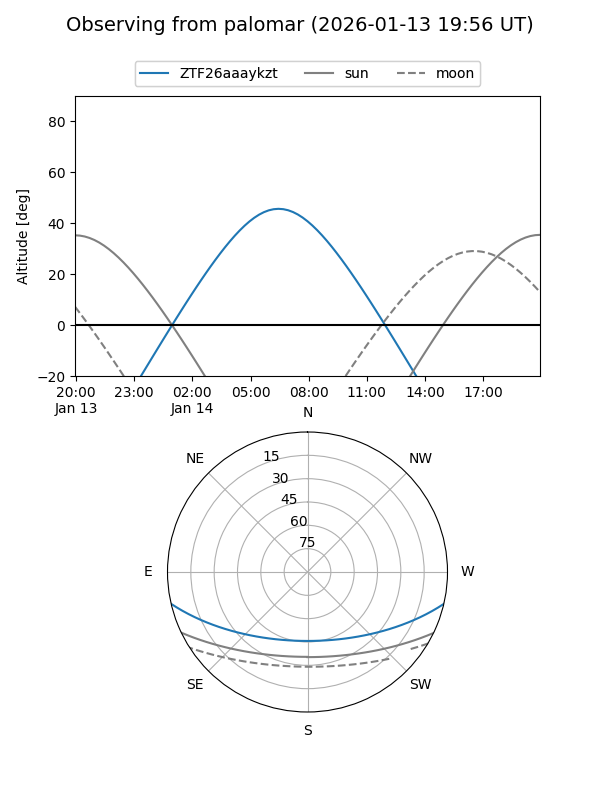

ZTF26aaaykzt
Target ZTF26aaaykzt at 2026-01-16 06:55
Aliases and brokers:
FINK: link
Lasair: link
ALeRCE: link
alt names
ZTF26aaaykzt (ztf,fink_ztf)
Coordinates:
equatorial (ra, dec) = 93.2751,-10.96089
equatorial (HMS+DMS) = 06:13:06.02,-10:57:39.20
galactic (l, b) = (218.5182,-13.42548)
Flags:
Photometry:
last ztfg=18.71
2 ztfg detections
Lightcurve

Visibility


Additional plots